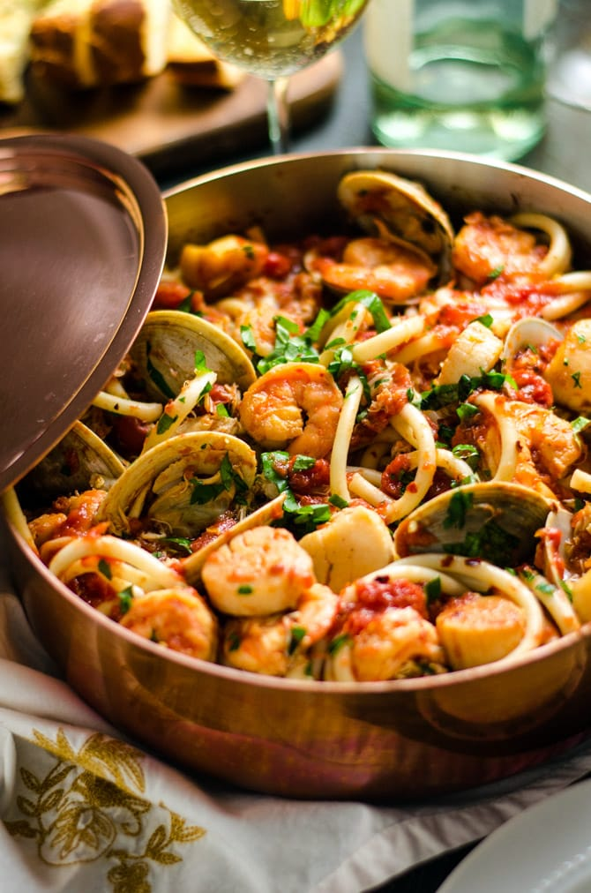
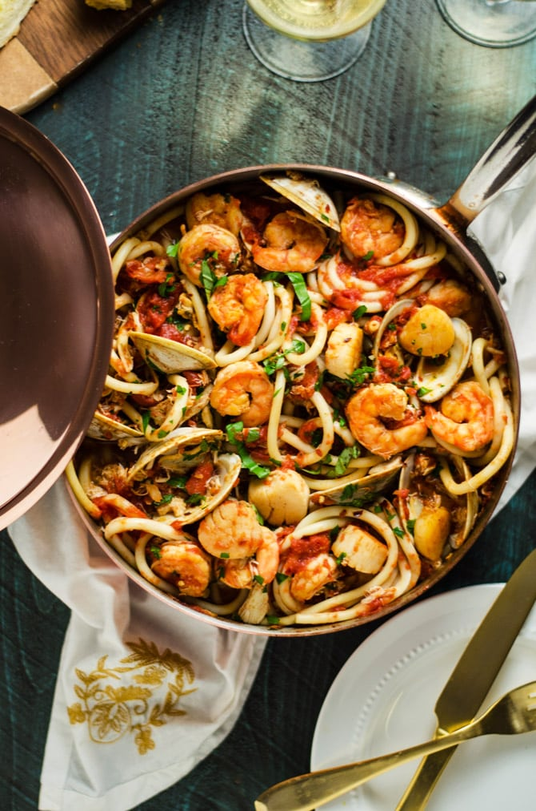

A delicious pot of seafood filled pasta in a tomato based sauce
This one is for the seafood lovers! This is a favorite dish among many who have tried it. A delicious and spicy tomato sauce is cooked with the bounty of the sea. The rich flavor of fresh seafood adds a flavorful note to the spicy tomato sauce. Once you try this recipe you're gonna be making it for the rest of your life.
What the fuck do we need to make this culinary masterpiece?
A crucial element of this dish is the freshest motherfucking seafood you can get. If you dont live within 45 clicks of an ocean do not attempt this dish.
Ingredients
Biggest shrimp you can find, Collosal shrimp preffered
Fresh diver scallops
Prince Edwards Island mussels
Whole squid
San Marzano Tomatoes
Head of Garlic
Fresh basil
Salt
Pepper
tomato paste
The most pure Extra Super Virgin Olive Oil you can find
Crushed red pepper

A delicous pot filled to the brim with fresh seafood, pasta and delicious fra diavlo sauce
Okay now how the fuck do we make this thing?!
When making this dish please understand that the proportions are created by you. I am not going to hold your hand and tell you exact measurements to put this thing together. You need to use the power of your anscestors to tell you how much of each ingredient you need.
Instructions
heat a large saucepan with some of that super duper virgin olive oil
While that pan is heating up boil a large pot of water and add a handful of salt
Now that the pan is hot throw in your garlic and some of that fresh basil
Once that pan is aromatic throw in those goddamn san marzano tomatos
ok ok now we have something cooking. Add in that seafood
Add in that tomato paste and a fuck ton of those crushed red peppers
Now your water is boiling throw in that fettucine my boy
Ok ok now were working with some shit. Let that bitch simmer at low heat until that seafood looks cooked and those mussels open up
Bang pasta is al dente, throw it in the pan with that delcious oceanic spicy sauce
Add a little bit of that pasta water
Put that shit on a plate and shove it in your mouth